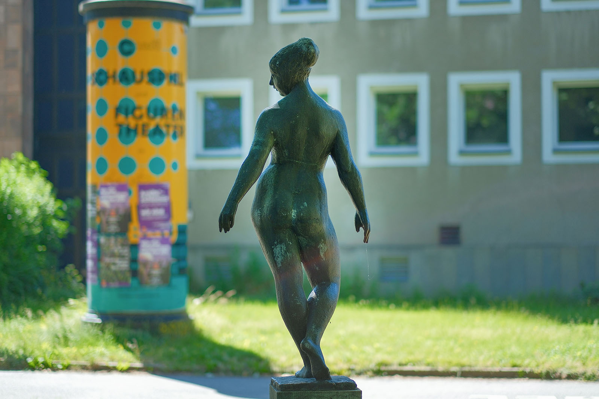
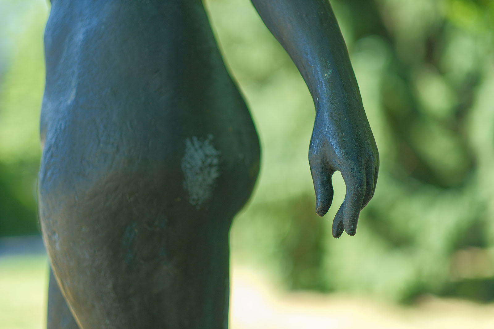
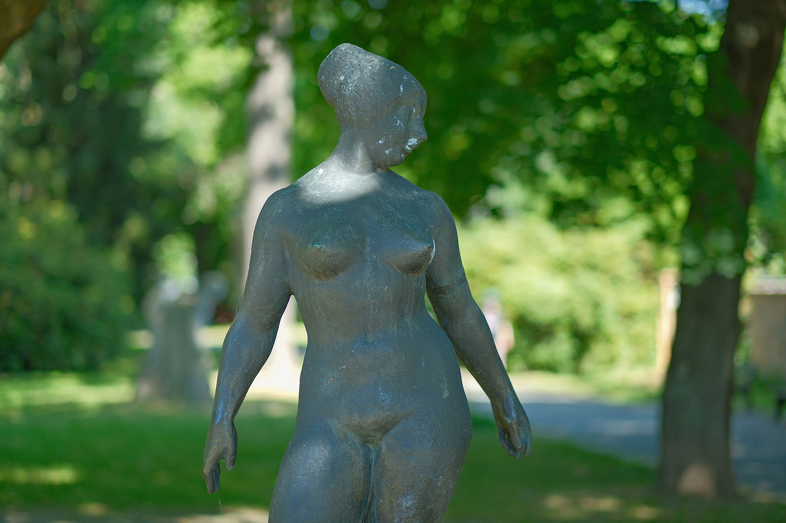
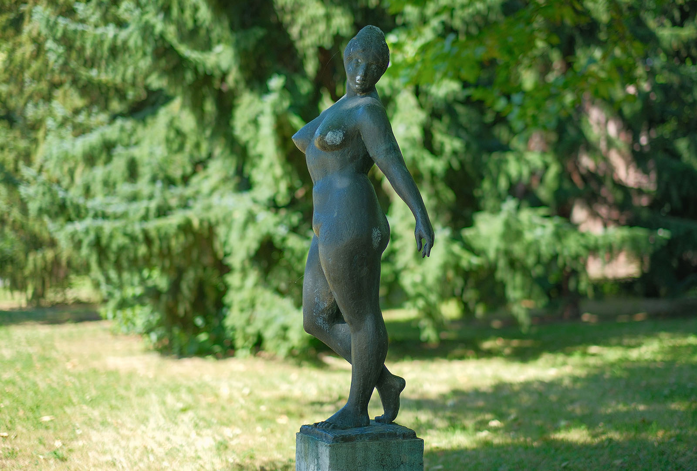

Recherche und Werkbeschreibung: Roman Pilz. Fotografien: Frank Krüger. Text und Bild wechseln sich wie in einem Magazin ab. Ein Klick auf ein Bild öffnet die Großansicht.
"Die Tänzerin" von Gerhard Lichtenfeld kann als Nachlass des Künstlers für das damalige Karl-Marx-Stadt gesehen werden. Erst zwei Jahre vor der Aufstellung der Bronze, 1980 am neu eingeweihten Schauspielhaus, verstarb der Professor für Bildhauerei aus Halle. Als Nachfolger seines Lehrers Gustav Weidanz, der zusammen mit Gerhard Marcks den guten Ruf der Bildhauerschule an der Burg Giebichenstein begründet hatte, wirkte Lichtenfeld nicht nur in Halle, sondern in der ganzen DDR.
Gerhard Lichtenfeld wurde 1921 in Halle (Saale) geboren und verstarb 1978 am selben Ort. Lichtenfeld studierte zunächst Rechtswissenschaft in Halle. Obwohl er bei einem Unfall 1940 seinen linken Unterarm verloren hatte, arbeitete er nach dem Krieg kurz auf dem Bau und begann von 1946 bis 1952 ein Studium der Bildhauerei an der Burg Giebichenstein.
Er machte sein Diplom bei Gustav Weidanz und arbeitete bis 1956 weiter als dessen Assistent. In dieser Zeit reiste er auch längere Zeit an die Kunstakademie München, um sich die Technik des Wachsausschmelzverfahrens für den Bronzeguss anzueignen. Anschließend leitete er fast 20 Jahre, von 1959 bis 1978, selbst die Bildhauerklasse an der Kunstschule Burg Giebichenstein.
Thematisch widmet sich Lichtenfeld vor allem dem weiblichen Akt. Seine Figuren sind realistisch gefasst, zeichnen sich aber ebenso durch barocke Lebensfreude und Dynamik aus. Ein weiteres wichtiges Feld seiner Tätigkeit war die Gestaltung von Medaillen.
1963 und 1970 erhielt der Künstler den Händelpreis des Bezirkes Halle, 1971 den Kunstpreis der Stadt Halle und 1974 den Nationalpreis der DDR. Er stellte seine Arbeiten regelmäßig im Gebiet der DDR aus und beteiligte sich auch an internationalen Kunstausstellungen. Mit seinen Plastiken gestaltete er auch das Erscheinungsbild seiner Heimatstadt Halle, besonders prominent sind der Musenbrunnen an der Ulrichskirche und der Frauenbrunnen in Halle-Neustadt.
In Chemnitz befindet sich, neben der großen Plastik vor dem Schauspielhaus, auch eine kleine Bronze in den städtischen Kunstsammlungen.
So würdigten die Kuratoren vom Büro für Bildende Kunst (Organ des Rats der Stadt Karl-Marx-Stadt) und des Verbands Bildender Künstler sein Werk, indem sie eine bereits Mitte der 1960er Jahre konzipierte Bronze in die Auswahl von 12 Kunstwerken aufnahmen, die das Parkareal um das Schauspielhaus künstlerisch aufwerten sollten. Eine kleinere Version der Plastik entstand bereits 1965 unter dem Titel "Tanzende".
Der Künstler erhielt in der Folge den Auftrag, diese im größeren Format für ein Versorgungszentrum in Halle-Neustadt umzusetzen, und vollendete im Jahr 1966 das Modell des knapp über 1,5 Meter hohen "Tanzenden Mädchens". Die Figur wurde allerdings nicht wie vorgesehen als Einzelfigur aufgestellt – erst Jahre später wurde sie als Krone eines Brunnenensembles aufgestellt.
Der Bildhauer Lichtenfeld bearbeitete das Thema "Tanz" in mehreren Variationen – immer aber steht der weibliche Akt im Mittelpunkt: Die Tänzerinnen recken die Arme in die Höhe, lockern ihre Glieder oder erscheinen mitten in einer schreitenden Bewegung, so wie hier.
Das Leitbild des Künstlers ist der realistisch geformte Körper des Menschen. So weisen bei der jungen Frau höchstens die hochgebundenen Haare assoziativ auf die typische Erscheinung der Ballerina hin, ansonsten aber wird auf jedes weitere Attribut verzichtet. Und doch verbindet Lichtenfeld den "nackten" Realismus mit der unmittelbar empfundenen Schönheit am trainierten Körper und der grazilen Bewegung, wie sie eben der künstlerische Tanz bietet.

Die Idee des Tanzes wird ihm zum Anlass, die weibliche Gestalt ganz in der Bewegung, mit leicht abgespreizten Armen und angewinkeltem Spielbein zu zeigen. Der Kopf ist nach links gedreht, das rechte Knie dagegen leicht nach rechts. Die Hüfte ruht leicht rechts über dem Standbein, wohingegen die Arme die Balance nach hinten absichern. Wohin geht der nächste Schritt der Tänzerin? Die Antwort reizt den Betrachter und bleibt doch offen, denn schnell kann der sanfte Rhythmus die Bewegung in eine andere Richtung drängen.
Neben der Chemnitzer Tänzerin existierten wie schon erwähnt noch weitere Bronzegüsse: drei in Dresden, Weimar, Leipzig sowie die Brunnenfigur in Halle, der Heimatstadt des Künstlers. Ihre ältere "Schwester" in Halle wurde schließlich im von 1970 bis 1974 realisierten, monumentalen Frauenbrunnen in Halle-Neustadt integriert und steht nun weit oben auf einer zentralen Brunnensäule, über vier weiteren "Frauen am Strand".

Lichtenfeld war ein ausgewiesener Experte im Bereich des Metallgusses, den er in seiner Diplomarbeit und einer Studienreise nach München erforschte. Viele seiner Arbeiten konnte er als Leiter der Bildhauerklasse und späterer Professor selbst in der Gießerei der Kunsthochschule Halle realisieren, weitere Güsse wurden in der Kunstgießerei Lauchhammer gefertigt.

Tanz die ganze Nacht
Die Bronzeskulptur „Tänzerin“ (1980) von Gerhard Lichtenfeld im Park der Opfer des Faschismus
